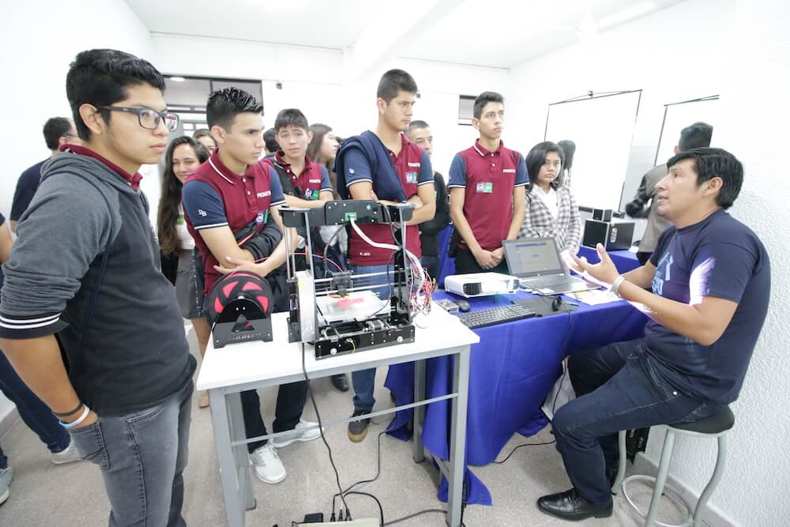
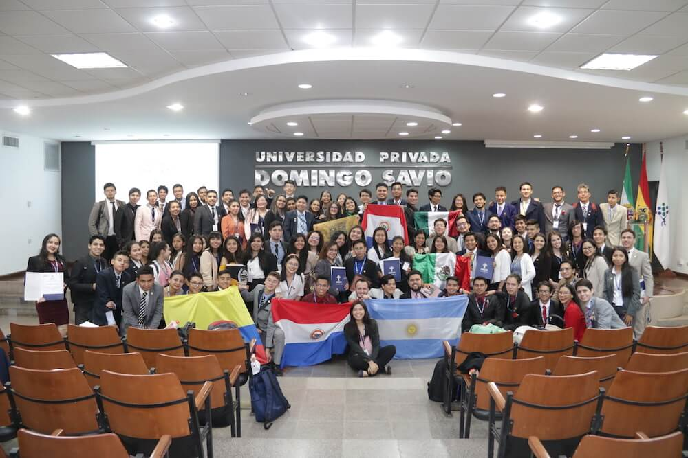
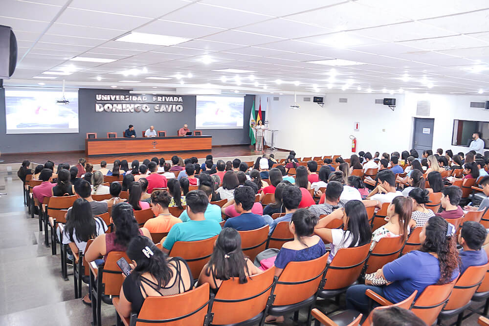

HISTORIA: La Universidad Privada Domingo Savio forma parte de la Corporación Educativa Domingo Savio, con 30 años de experiencia y presencia en el Sistema Educativo Nacional. La Universidad Privada Domingo Savio, se caracteriza por tener la red universitaria mas grande del país, contando con ocho sedes (Santa Cruz, Tarija, Potosí, Cochabamba, La Paz, Trinidad, Sucre, Oruro).

PERFIL DEL LICENCIADO EN INGENIERÍA DE SISTEMAS Un Ingeniero de Sistemas graduado de la UPDS, es aquel profesional que desarrolla actuaciones integrales para resolver problemas del contexto a través de los saberes conocer, hacer, ser y convivir, siendo capaz de: Implementar soluciones tecnológicas innovadoras, crear proyectos de investigación científica y tecnológica para resolver problemas del entorno

MISIÓN
Generar cambios en las personas para desarrollar emprendedores socialmente responsables capaces de responder a desafíos emergentes. 
VISIÓN
Ser la red de educación universitaria referente a nivel nacional por su formación académica de excelencia basada en la investigación científica y su compromiso con la Internacionalización. 